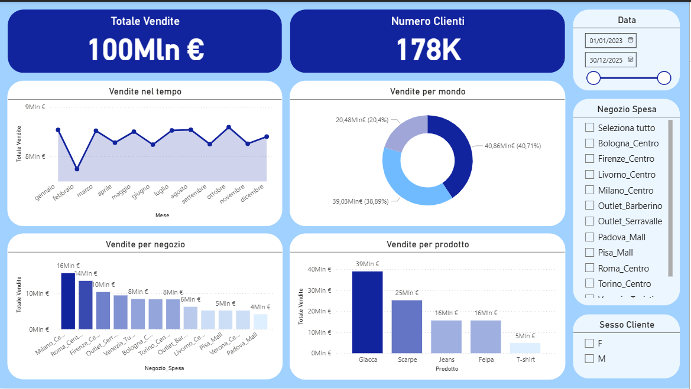
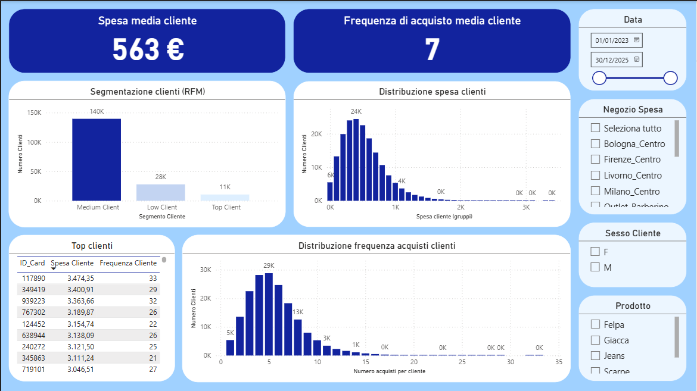
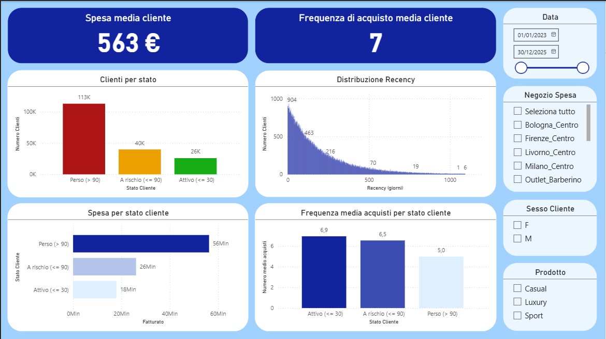

Overview
Obiettivo del progetto
Analizzare il comportamento dei clienti nel settore retail utilizzando un approccio RFM (Recency, Frequency, Monetary), con l'obiettivo di identificare segmenti ad alto valore e supportare decisioni di marketing, retention e crescita.
Il dataset è stato costruito replicando la struttura di dati retail reali, mantenendo logiche di business coerenti e sostituendo le informazioni sensibili.
Fase 01
Data Preparation & EDA
Validazione iniziale
Verificata la completezza delle colonne chiave. Nessun valore nullo rilevato nelle variabili critiche.
- ID_Card
- Prezzo
- Prodotto
- Data
Coerenza dati — Business Logic
Controlli effettuati per garantire coerenza con le logiche del dominio retail.
Sesso ↔ Reparto
Cliente M → Reparto Uomo · Cliente F → Reparto Donna
Prodotto ↔ Mondo
T-shirt / Jeans → Casual · Scarpe / Felpe → Sport · Giacche → Luxury
Prezzo ↔ Categoria
T-shirt fascia bassa · Jeans / Felpe fascia media · Giacche fascia alta
Gestione duplicati & Outlier
- Verifica duplicati su chiavi transazionali: (ID_Card, Data, Codice_Articolo, Prezzo)
- Rimozione dei duplicati per evitare distorsioni nelle metriche cliente
- Analisi della distribuzione dei prezzi e verifica coerenza per categoria
Data Transformation
- Creazione della colonna Data a partire da Anno, Mese, Giorno
- Aggiunta di Giorno_Settimana e flag Weekend (booleano)
- Uniformati valori categorici e conversione corretta dei tipi dati
EDA — Pattern identificati
- Vendite per giorno della settimana e confronto weekend vs weekday
- Identificazione picchi di vendita e performance per prodotto/categoria
- Frequenza acquisti per cliente, distribuzione spesa, clienti ricorrenti vs occasionali
- Distribuzione prezzi per categoria e verifica clustering naturale delle fasce
Fase 02
Customer Analysis & RFM Modeling
Costruzione delle tre metriche fondamentali per la fidelity cliente.
R
Recency
Giorni dall'ultimo acquisto
F
Frequency
Numero di acquisti per cliente
M
Monetary
Spesa totale per cliente
Segmentazione clienti
Top Client — alta spesa e alta frequenza
Medium Client — valore intermedio
Low Client — bassa spesa
Stato cliente (Recency)
Attivo — ≤ 30 giorni
A rischio — 31–90 giorni
Perso — > 90 giorni
Fase 03
Dashboard Power BI
La dashboard è strutturata in tre sezioni principali per coprire l'intero ciclo analitico: dai KPI di vendita alla fidelity cliente.

Overview Vendite — KPI totali, trend temporale, performance per negozio e prodotto

Analisi Clienti — Segmentazione, distribuzione spesa, top clienti

Fidelity & Retention — Recency, clienti attivi vs a rischio vs persi
Risultati
Key Insights
8 pattern chiave emersi dall'analisi, con relative raccomandazioni strategiche.
01
Concentrazione del fatturato
Il fatturato è concentrato su una minoranza di clienti ad alto valore, mentre la maggior parte genera una spesa contenuta.
Fidelizzazione Top Client · Strategie di retention
02
Distribuzione clienti
La maggioranza appartiene al segmento Medium, indicando opportunità di crescita verso il segmento superiore.
Upselling verso Top Client
03
Distribuzione della spesa
Distribuzione a coda lunga: pochi high spender generano gran parte del valore totale.
Personalizzazione offerte · Segmentazione marketing
04
Frequenza e retention
I clienti attivi mostrano una frequenza d'acquisto significativamente maggiore rispetto ai clienti persi.
Aumentare frequenza → migliorare retention
05
Recency e churn
Una quota significativa di clienti risulta inattiva nel periodo analizzato.
Campagne di re-engagement · Offerte mirate
06
Perdita di valore latente
Una parte del fatturato deriva da clienti oggi inattivi, recuperabili con azioni mirate.
Strategie di recupero clienti
07
Differenze tra negozi
I negozi principali generano la maggior parte del fatturato con logiche di business replicabili.
Replicare strategie top store · Ottimizzare outlier
08
Mix prodotto
I prodotti ad alto volume non coincidono sempre con quelli a maggiore valore unitario.
Ottimizzazione assortimento · Cross-selling
Conclusioni
Takeaway
Il progetto dimostra come l'integrazione di analisi dati e logiche di business permetta di identificare segmenti ad alto valore, migliorare la retention clienti e supportare decisioni strategiche data-driven — trasformando dati transazionali grezzi in insight azionabili per il business.